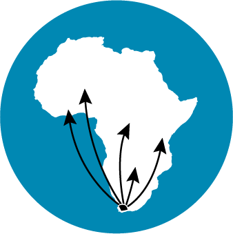

-
2002
Knowledge should be freely accessible
The Free High School Science Texts project begins publishing Open Educational Resources (OER) as a group of students get together with the conviction that they need to share their knowledge, for free. With the collective power of volunteer collaboration, the project produces open textbooks for Gr 10-12 Mathematics, Physics and Chemistry, allowing teachers and learners to print or share them digitally.
-
2007
A project with an open mission
Off the back of the FHSST work, Siyavula is born as a fellowship project within the Shuttleworth Foundation, with the aim of making openly licensed content available for all grades and subjects within South Africa. The government prints and distributes millions of the open textbooks to all learners in the country. Siyavula goes on to produce additional open content in Gr 4-9 and refines the collaborative authoring process, volunteer contribution and unique content production pipelines.
-
2012
Transition to a technology company
With help from the Shuttleworth Foundation and PSG Group Limited, Siyavula Education is spun out as a company in pursuit of long term sustainability and stability. The focus is on building an integrated learning experience, drawing on the benefits of open content and adaptive practice for mastery in Maths and Science.
-
2013 - 2016
Siyavula as a social enterprise
Siyavula continued to improve and extend its adaptive practice software, with feedback from around 100 paying private school customers in South Africa. The company also worked with local grant funders such as the Sasol Foundation to develop further free and open textbooks for Grades 4 - 9. With the increased traffic to the open online textbooks by students from low and no-fee public schools on their mobile phones, Siyavula began collaborating with local foundations to provide students with free access to the online practice software. In 2014, with an investment from the Silicon Valley-based group, Siyavula became part of the Omidyar Network (now Imaginable Futures), enabling the company to expand its offering, and opening up opportunities for international funders and partners.
-

2017
The Siyavula Foundation
The Siyavula Foundation was formed in response to an increase in the demand from low and no-income schools for access to Siyavula’s practice software, and interest from international grant funders. Siyavula Education and the Siyavula Foundation formed a strategic partnership to jointly seek to make both the software practice and open online textbooks freely available to students across Africa. Google.org was the first funder to support the newly formed Siyavula Foundation, funding the alignment and localisation of the software for the Nigerian curriculum. Siyavula Education initiated a grant-funded project with the Michael & Susan Dell Foundation, aimed at tailoring the solution to low-end public schools and provincial reporting, while migrating grant-funded projects to the Siyavula Foundation.
-
2019-2020
Iterating on a sustainability model for Africa
The Siyavula Foundation and Siyavula Education continued to test and refine a model that combined grant funding, customer revenue, corporate partners, and government procurement. In 2019, a partnership with MTN meant that we were able to offer free access to the practice platform for all Grade 10 - 12 Mathematics students in South Africa. During this time, use of the online textbooks grew to more than 1,8 million students a year, with more than 18 million questions delivered and marked on the practice platform, to more than 350 000 users. A partnership with the Mastercard Foundation in 2020 gave us the opportunity to launch a localised, curriculum-aligned free practice service to Rwandan S1 - S4 students, as a COVID-response initiative. More than one million questions were completed by Rwandan students within the first year.
-
2021
Connecting online mastery to out-of-school opportunities
In collaboration with Unicef in South Africa, the Siyavula Foundation is currently developing a Mathematics skills certificate, and building a pipeline for students to connect with opportunities for further studies, internships, bursaries and employment. The partnership has also enabled Siyavula to open its practice service freely to Grade 8 - 9 Mathematics, and Grade 10 - 12 Physical Sciences students. The partnership with MTN has also resulted in the launch of a free African daily Mathematics question service on the Ayoba chat platform. More than 100 000 subscribers across seven territories are currently receiving daily Mathematics questions from Siyavula, via Ayoba.
-

2022
Extending the model to more African countries
The Siyavula Foundation model, which combines access to a set of open online textbooks and its adaptive practice software on low-end mobile devices, promoted in partnership with a local Telco and Education Ministry, can deliver real impact in other African countries. We continue to seek partners to support the running of the platform for our current students, as well as the alignment and development of open textbooks and practice software to extend our impact in other countries.